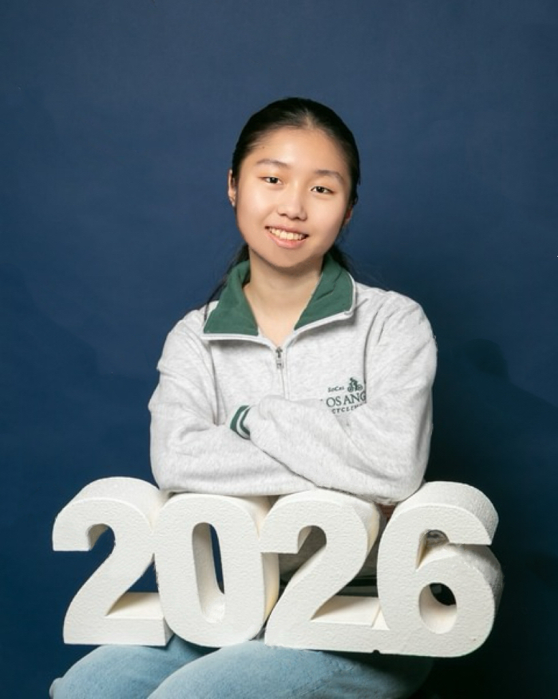
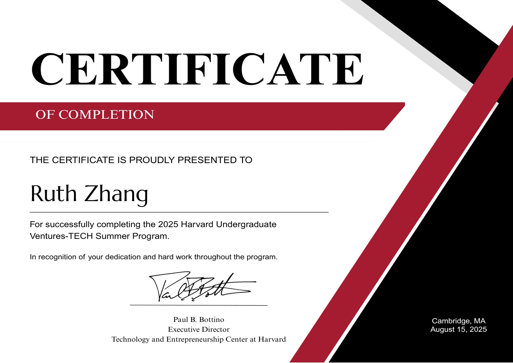
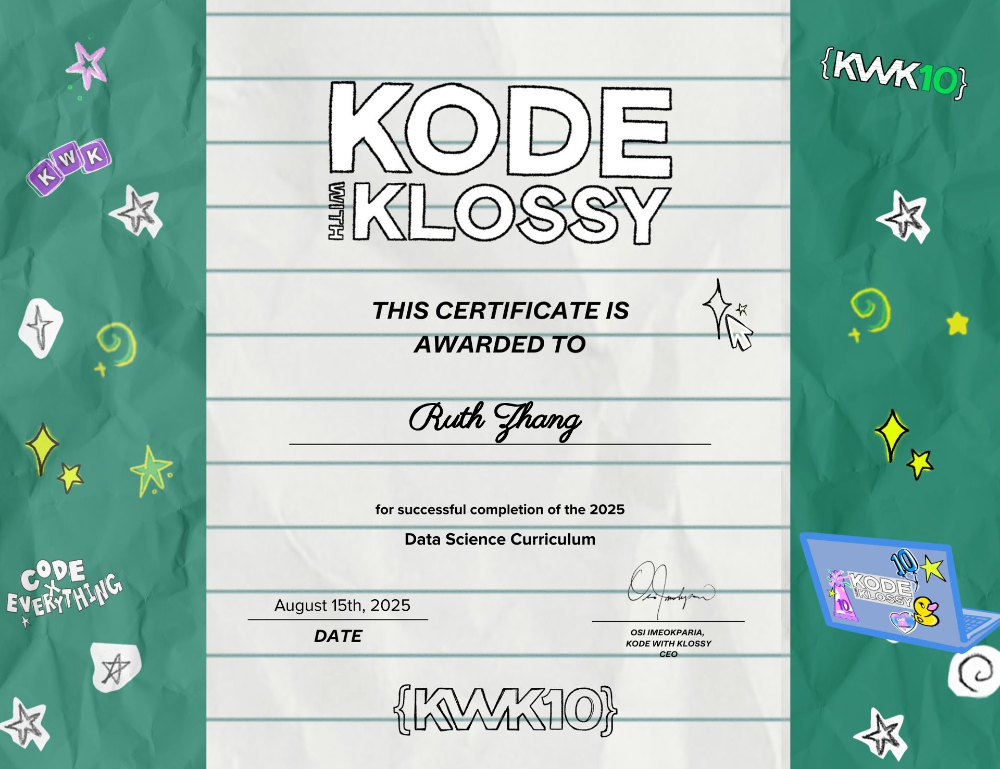

StudyPlanner
A web app that turns course syllabi into a weekly study schedule and sends reminders.
View on GitHubI’m a first-year computer science student who is interested in front-end software development, machine learning, AI and data science.

My interest in tech first started when I was in grade 10, where I participated in the Technovation Girls Challenge. Through the competition, I met likeminded peers, and fell in love with the problem solving aspect in programming. With tech, I felt I can make a difference to the world using my power for the first time. I'm currently studying computer science at the University of Toronto St. George. I'm interested in working in front-end development, machine learning, AI or data science roles. Although I don't have much experience, I'm always keen to learn new skills.
Outside of class, I've participated in NPO hosting high school hackathons, tutor high school students, and contribute to my local community through volunteering. I also love horseback riding, traveling, playing badminton, and skiing.I’m always happy to talk about new ideas or collaborate on something fun.
Internships, teaching and clubs that shaped how I work.

With the Harvard Ventures Tech Summer Program, I had the priviledge to be a technical intern working with edtech startup TeachShare. I learned about startup through daily lectures, used Google Colab and tested 8+ LLM in Hugging Face; read 6+ research paper on learning strategy and outcomes; and created a worksheet generation chatbot tailored with effective learning strategies. I heard from guest speakers like Mark Cuban and led my group to present the final project.

Learned about data analysis, data cleaning, and data visualiztion; Used Tableau to create visualizations on data analysis; Created a project exploring the relationship between SAT scores and family income (check it out in project section!)
One of BC's largest youth-led hackathon organization; Host annual hackathon for high school students; I was ambassador director in my first year, and executive director in my second year. In charged of the ambassador team, and outreach to schools and students; Helped doubled the number of ambassadors and increased participants to 50+; Led the executive team to plan and run the 2026 hackathon (Hack Your Life); Communicated with 10+ field professionals; Oversaw the entire event
A few things I’ve built.
A web app that turns course syllabi into a weekly study schedule and sends reminders.
View on GitHubAn interactive tool that animates pathfinding algorithms like A* and Dijkstra on a grid.
View demoA data analysis of ride patterns that predicts bike demand by time of day and weather.
Read write-upHackathons, climbing, baking and everything in between.
I’m open to internships, research opportunities, and interesting side projects. The easiest way to reach me is by email.